Contexto
Durante uma análise de API, eu não possuía acesso completo à collection — apenas um Swagger incompleto e com diversos endpoints ausentes.
A alternativa natural foi utilizar o aplicativo mobile que consumia essa API. Porém, logo no início surgiu o primeiro obstáculo:
O aplicativo possuía proteções anti-root.
Inicialmente utilizei scripts clássicos de Frida, mas sem sucesso. Como precisava avançar para iniciar o pentest da API, parti para a engenharia reversa do APK, que estava ofuscado via Proguard/R8.
Recon inicial
Seguindo o fluxo normal, a análise começou pelo
AndroidManifest.xml, identificando a MainActivity.
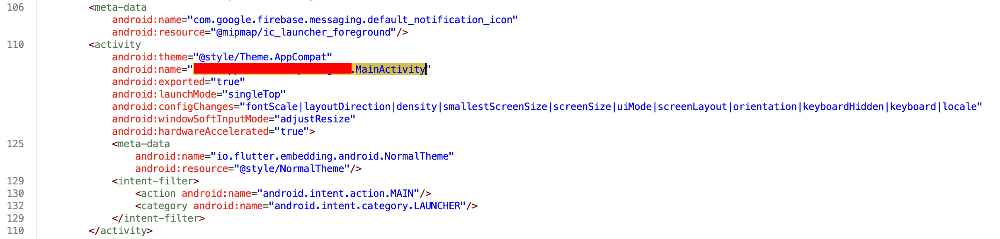
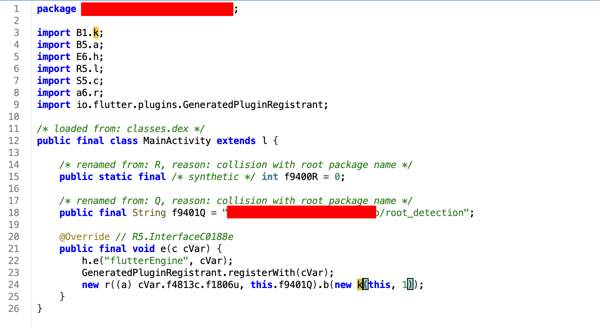
Um ponto importante foi a identificação do canal Flutter:
public final String f9401Q =
"REDACTED/root_detection";
Isso já indicava claramente um mecanismo de detecção de root via bridge Flutter ↔ código nativo.
Também é possível verificar que a váriavel F9401Q está sendo utilizada no import B1.k.
Análise da detecção de root
Ao verificar o import B1.k, podemos verificar o método onMethodCall e também é possível ver a string "isDeviceRoot".
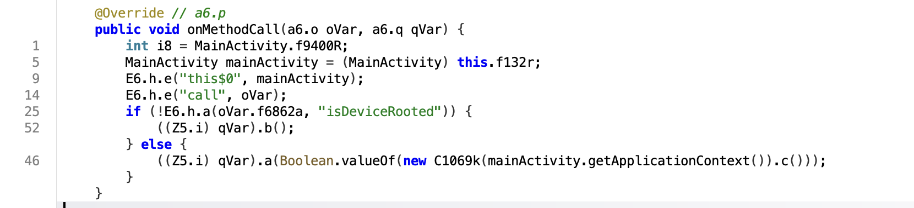
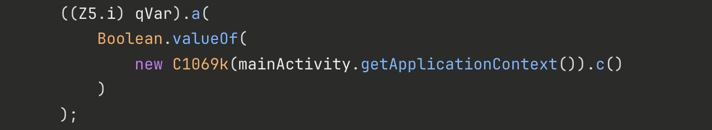
Agora vamos verificar o que é feito em C1069k e assim entender melhor os testes executados. Foi importante marcar no jadx-gui para mostrar código inconsistente, caso contrário ele collapsa e não mostra o código totalmente.
O método c() retorna:
- true → dispositivo rootado
- false → dispositivo limpo
Ela possui 7 verificações e utiliza a biblioteca RootBeer (com.scottyab.rootbeer).
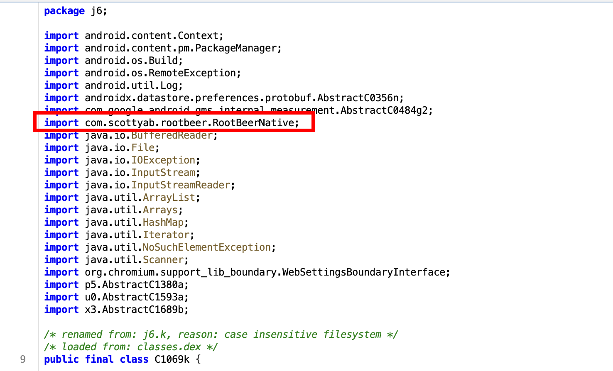
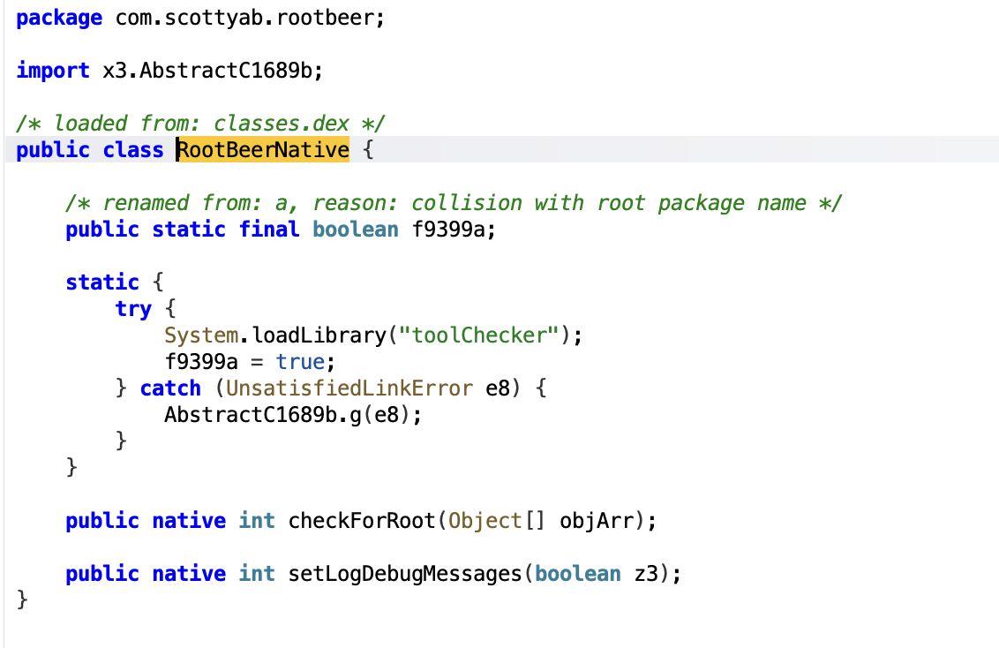
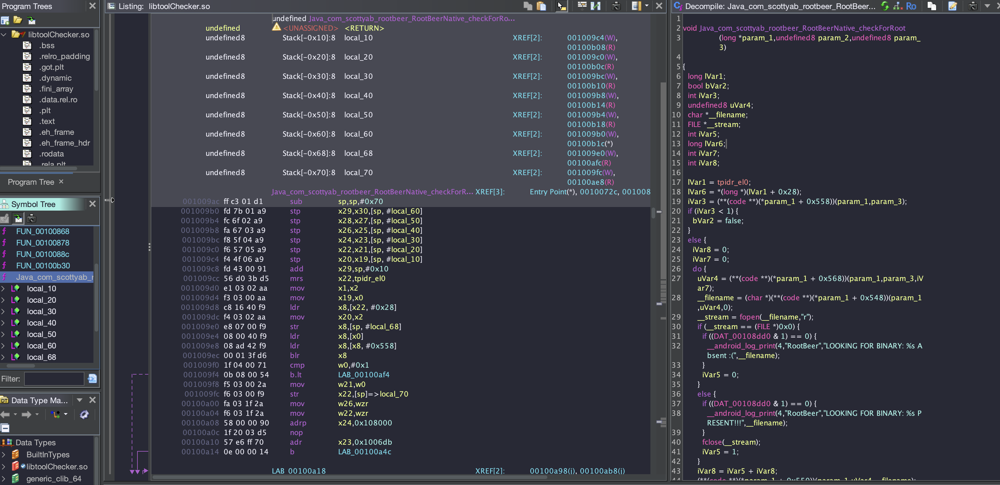
Checks identificados
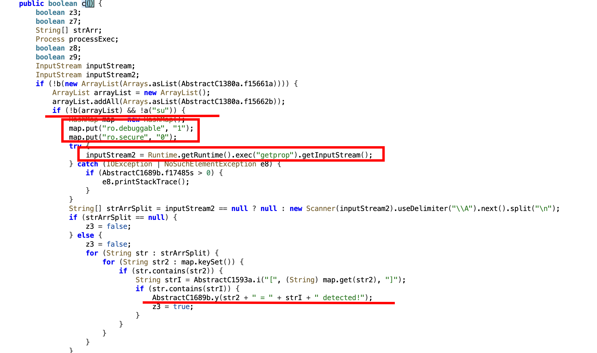
Analisando o método c(), percebemos que ele opera em camadas progressivas de desconfiança. A primeira linha de investigação consiste em varrer o sistema em busca de pacotes suspeitos usando duas listas distintas de aplicativos conhecidos de gerenciamento de root, tudo isso devidamente logado, o que significa que cada detecção pode ser observada em tempo real via logcat. (Não entendi o motivo dos desenvolvedores logarem isso).
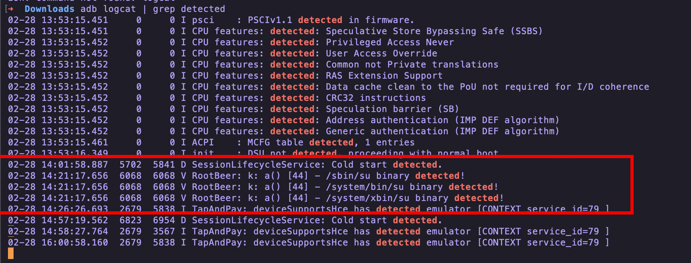
Na sequência, delega ao método a() a tarefa de farejar o binário su pelo filesystem, percorrendo os paths mais comuns onde ele costuma se esconder em dispositivos comprometidos. Não satisfeito com isso, o método vai além e executa diretamente o comando getprop para interrogar as entranhas do sistema operacional, vasculhando as propriedades ro.debuggable e ro.secure — dois sinalizadores que, quando adulterados, denunciam tanto a presença de um build de desenvolvimento quanto a existência de um shell com privilégios de root liberados.
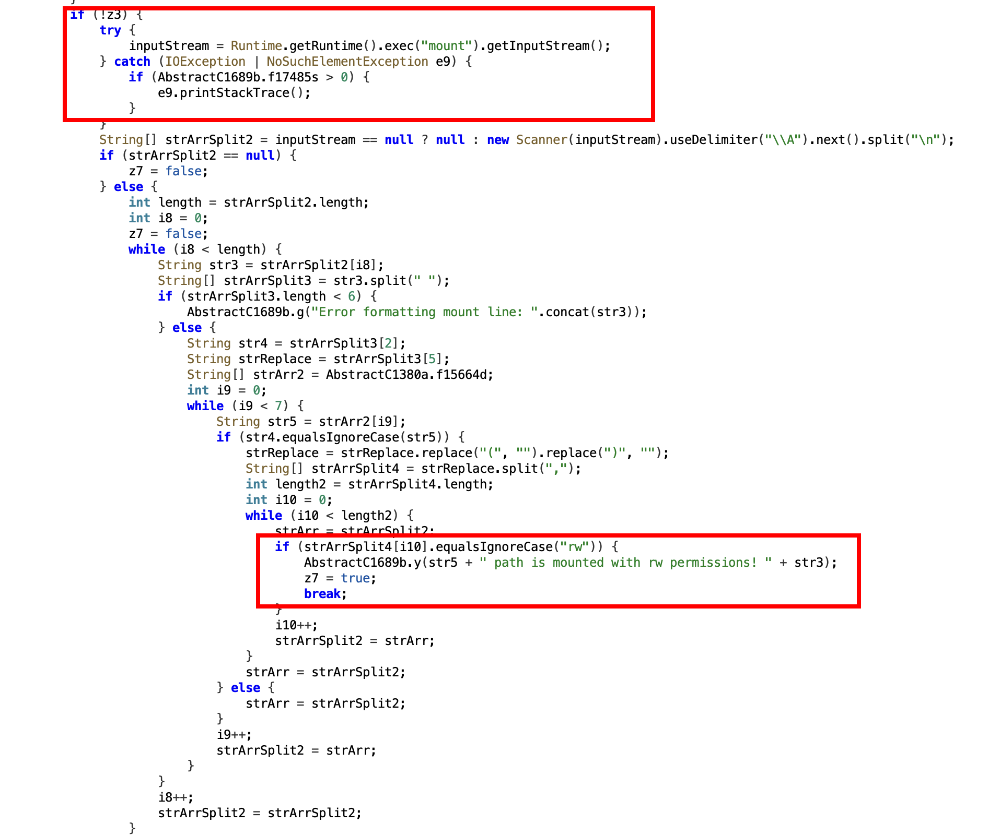
Também podemos observar que a verificação utiliza
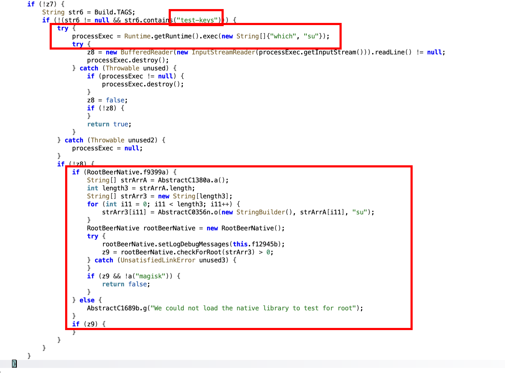
Aqui ele checa como o dispositivo foi compilado, em casos como test-keys indica ROM não oficial. Logo em seguida podemos notar mais uma verificação por “su” direto no shell, caso tenha algum retorno o binário está no PATH do sistema.
O app também possui verificação nativa com RootBeer que é mais complexo de interceptar, além da verificação por magisk
Após a engenharia reversa, o fluxo de detecção pode ser resumido como:
public boolean isDeviceRooted() {
// 1. Apps de root (lista primária)
if (hasRootApps(PRIMARY_ROOT_APPS)) return true;
// 2. Apps de root (lista secundária)
if (hasRootApps(SECONDARY_ROOT_APPS)) return true;
// 3. Binário su
if (binaryExists("su")) return true;
// 4. Props suspeitas
if (hasDebugSystemProps()) return true;
// 5. Partições RW
if (hasRwMountedPartitions()) return true;
// 6. test-keys
if (Build.TAGS.contains("test-keys")) return true;
// 7. which su
if (whichSuExists()) return true;
// 7b. RootBeer + Magisk
if (nativeCheckForRoot() && binaryExists("magisk")) return true;
return false;
}
Ou seja: uma cadeia relativamente robusta de verificações.
Tentativas iniciais
A abordagem inicial foi tentar bypass individual de cada verificação, porém sem sucesso consistente.
Foi então que a estratégia mudou para um ponto mais alto da stack:
Interceptar o retorno direto no MethodChannel.
Bypass com Frida
A ideia foi simples e eficiente:
interceptar onMethodCall e forçar os retornos esperados pelo app.
Java.perform(function() {
const Boolean = Java.use('java.lang.Boolean');
const spoofFalse = [
'isDeviceRooted', 'isRooted', 'isRootAvailable',
'isJailBroken', 'isMockLocation',
'isDevelopmentModeEnable', 'usbDebuggingCheck',
'isTampered'
];
const spoofTrue = [
'isRealDevice'
];
function hookClass(className) {
const Clazz = Java.use(className);
Clazz.onMethodCall.implementation = function(call, result) {
const name = call.getClass()
.getDeclaredField('a')
.get(call);
if (spoofFalse.indexOf(String(name)) !== -1) {
Java.cast(result, Java.use('Z5.i'))
.a(Boolean.FALSE.value);
return;
}
if (spoofTrue.indexOf(String(name)) !== -1) {
Java.cast(result, Java.use('Z5.i'))
.a(Boolean.TRUE.value);
return;
}
return this.onMethodCall(call, result);
};
}
hookClass('B1.k');
hookClass('Z0.a');
hookClass('z5.a');
});
Resultado
Após o hook, o aplicativo passou a funcionar normalmente, permitindo finalmente iniciar a interceptação das chamadas da API.
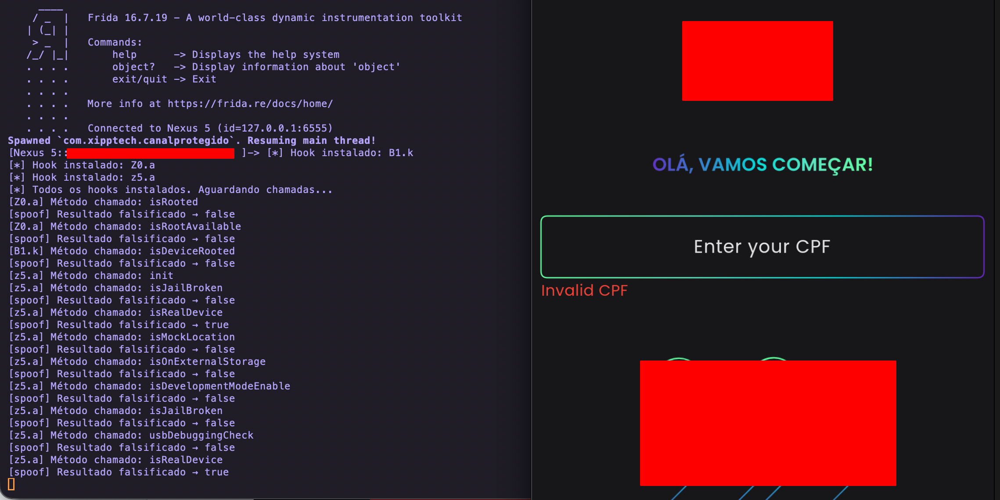
Conclusão
Mesmo aplicações que utilizam RootBeer + checks adicionais podem ser contornadas quando:
- Existe bridge Flutter exposta
- As validações dependem do MethodChannel
- Não há hardening adequado no lado nativo
O ponto chave aqui não foi lutar contra cada verificação, mas sim atacar o ponto de decisão.
Às vezes o bypass mais eficiente não está na verificação — está no retorno.
Happy Hacking. 🏴☠️